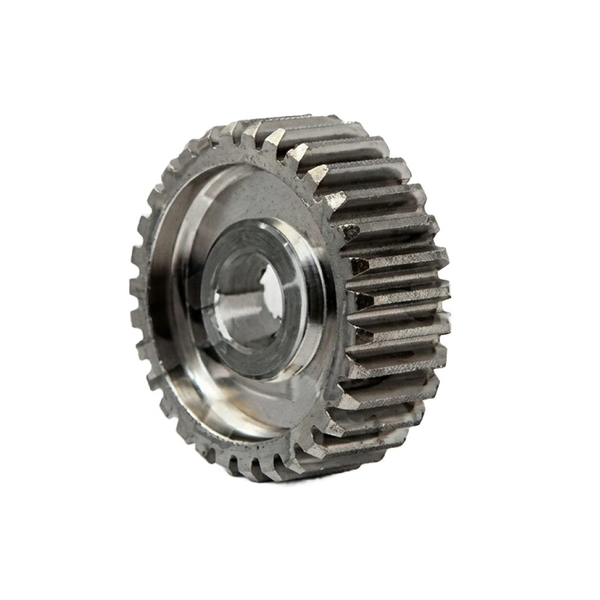
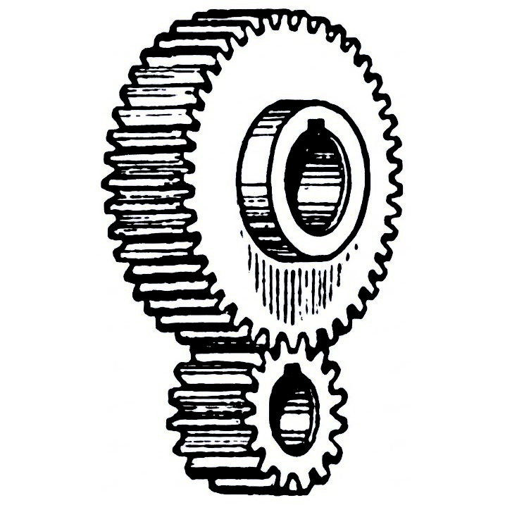

Позвонить: (4842) 75-75-05
Написать сообщение: m-40@inbox.ru
- Главная
- О компании
- Контакты
- Редукторы и мотор-редукторы
- Колеса крановые
- Блоки полиспаста
- Шкивы тормозные
- Муфты
- Крюки и крюковые подвески
- Грузовые барабаны
- Шлицевые детали
- Конические шестерни
- Цилиндрические шестерни
- Запасные части для козловых кранов
- Запасные части для портальных кранов
- Запасные части для башенных кранов
- Техническая информация
- Правовая информация
Цилиндрические шестерни → Прямыозубые шестерни
- Главная
- О компании
- Контакты
- Редукторы и мотор-редукторы
- Колеса крановые
- Блоки полиспаста
- Шкивы тормозные
- Муфты
- Крюки и крюковые подвески
- Грузовые барабаны
- Конические шестерни
- Цилиндрические шестерни
- Шлицевые детали
- Запасные части для козловых кранов
- Запасные части для портальных кранов
- Запасные части для башенных кранов
- Техническая информация
- Правовая информация

ООО «ЦКК» изготавливает цилиндрические шестерни с прямым зубом со следующими характеристиками:
- Класс точности - до 6 включительно;
- Модуль - до 30 включительно;
- Диаметр - до 3 500 мм включительно.
Изготавливаем цилиндрические шестерни с прямым зубом в штучном и серийном производстве. Возможно изготовление по образцам и эскизам заказчика. Индивидуальный подход.
Цилиндрическая прямозубая зубчатая передача относится к передачам с зацеплением непосредственного контакта.
Применяется при окружных скоростях менее 2 м/с, при большой твёрдости зубьев (когда динамические нагрузки невелики по
сравнению с полезными), а также применяется в открытых и планетарных передачах.

Цилиндрические прямозубые шестерни являются наиболее распространенной разновидностью зубчатых колес. Зубья являются продолжением радиусов, а линия контакта зубьев обеих
шестерён параллельна оси вращения. При этом оси обеих шестерён также должны располагаться строго параллельно.
Профиль зубьев таких колёс как правило имеет эвольвентную боковую форму. Эвольвентное зацепление - зубчатое зацепление, в котором профили зубьев
очерчены по эвольвенте окружности.
Эвольвентное зацепление позволяет передавать движение с постоянным передаточным отношением.
Зубья зубчатых колёс должны быть очерчены по кривой, у которой общая нормаль, проведённая через точку касания профилей зубьев, всегда проходит
через одну и ту же точку на линии, соединяющей центры зубчатых колёс, называемую полюсом зацепления.
В прямозубой передаче зубья входят в зацепление сразу по всей длине. Из-за неточности изготовления передачи и ее износа процесс выход
а одной пары зубьев из зацепления и начало зацепления другой пары сопровождается ударами и шумом, сила которых возрастает с увеличением
окружной скорости колес.
Прямозубые передачи применяют при невысоких и средних окружных скоростях, в частности, открытые передачи, как правило, делают прямозубыми.
Достоинства прямозубых зубчатых колёс:
- Постоянное передаточное число;
- Отсутствие осевых усилий;
- Очень высокий показатель коэффициента полезного действия в пределах 0,97-0,99;
- Большая нагрузочная способность;
- Малые габариты;
- Простота монтажа и обслуживания;
- Высокая надежность;
- Малые величины нагрузок на валы и опоры.
Недостатки прямозубых зубчатых колёс:
- Не позволяют выполнить бесступенчатую вариацию передаточного числа;
- Требуют точности при производстве и последующей сборке;
- Обладают недостаточными амортизирующими качествами и высоким уровнем шума при работе на предельных скоростях;
- В случае значительных промежутков между осями валы получаются очень громоздкими;
- Не предохраняют от сильных перегрузок;
- При нарезке зубьев требуется специальный инструмент и оборудование.
Термообработка шестерен
Наибольшее распространение получили: для серийного производства – улучшение;
для серийного и массового – цементация и закалка (или закалка токами высокой частоты).
Шестерни из цементуемых марок сталей подвергаются газовой цементации в шахтных муфельных электропечах с подачей керосина. О глубине слоя
цементации судят по образцам, проходящим цементацию вместе с шестернями.
После цементации, проводят нормализацию или высокий отпуск, закалку с охлаждением в масле и низкий отпуск.
Все шестерни после термической обработки очищаются от окалины в дробеструйной установке и проходят контроль твердости по зубу на
приборах Роквелла.
Параметры термообработки шестерен
Термообработка
Твердость
Материал
Примечания
Улучшение (закалка до малой твердости)
НB 260-300
Сталь 40
Окончательная нарезка зубьев после термообработки во избежание коробления
Сталь 45
Сталь 40Х
Сталь 45Х
Закалка
HRC 40-50
Сталь 40Х
Необходима шлифовка зубьев по профилю для устранения коробления
Сталь 40ХН
Цементация и закалка
HRC 56-63
Сталь 20Х
Окончательная обработка зубьев до термообработки.
Коробление невелико
Сталь 18ХГТ
Сталь 12ХНЗА
Сталь 20ХН3А
Закалка ТВЧ
НRC 50-60
Сталь 45
Только для крупных шестерен с модулем более 8
Сталь 40Х
Поверхностная закалка зубьев без охвата переходной поверхности (с обрывом твердого слоя у впадины зубьев) повышает износостойкость и сопротивление выкрашиванию,
но понижает прочность при изгибе, так как создает концентратор напряжений у корня зуба. Желательно, чтобы закаленный слой повторял очертание впадин.
Цементация - поверхностное насыщение углеродом сталей, содержащих углерода менее 0,3%, с последующей закалкой. Цементация обеспечивает большую твердость 56...63
НRСЭ, несущую способность поверхностных слоев зубьев и высокую прочность на изгиб. Целесообразно применять газовую цементацию как более производительную.
Применяют цементируемые стали: 20Х, а для ответственных зубчатых колес, работающих с ударными нагрузками, хро-моникелевые стали 12ХНЗА, 20ХНМ, безникелевые
стали 18ХГТ, 25ХГТ и др.
Толщина цементированного слоя примерно 0,3 модуля. Время цементации на глубину 1 мм примерно 3 часа - процесс длительный.
При цементации рабочие поверхности зубьев искажаются и требуется их шлифование.
Азотирование - насыщение поверхностных слоев азотом, обеспечивает высокую твердость 58...65 НRСЭ и износостойкость поверхностных слоев. Азотируют готовые
детали без последующей закалки. Для азотируемых колес применяют молибденовую сталь 38Х2МЮА, безалюминиевые стали типа 40ХФА, 40ХНА, 40Х. Зубья после
азотирования в связи с малой толщиной слоя насыщения и малым короблением не шлифуют. Поэтому азотирование применяют для колес с внутренними зубьями и других,
шлифование которых трудно осуществимо. Недостатком азотированных колес является малая толщина упрочненного слоя (0,2...0,5 мм), не позволяющая применять их
при ударных нагрузках из-за опасности растрескивания упрочненного слоя и при работе с интенсивным изнашиванием (при загрязненной смазке).
Нитроцементация - насыщение поверхностных слоев углеродом и азотом с последующей закалкой - обеспечивает им высокую прочность, износостойкость и сопротивление заеданию.
Нитроцементация идет с достаточно высокой скоростью и в связи с малыми толщиной упрочняемого слоя и его деформациями позволяет обойтись без последующего шлифования.
Улучшаемые стали применяют для зубчатых колес, преимущественно изготовляемых в условиях мелкосерийного и единичного производства при отсутствии жестких требований к габаритам.
По вопросам изготовления цилиндрических шестерен с прямым зубом обращайтесь в отдел продаж по телефону:
(4842) 75-75-05
- Постоянное передаточное число;
- Отсутствие осевых усилий;
- Очень высокий показатель коэффициента полезного действия в пределах 0,97-0,99;
- Большая нагрузочная способность;
- Малые габариты;
- Простота монтажа и обслуживания;
- Высокая надежность;
- Малые величины нагрузок на валы и опоры.
Недостатки прямозубых зубчатых колёс:
- Не позволяют выполнить бесступенчатую вариацию передаточного числа;
- Требуют точности при производстве и последующей сборке;
- Обладают недостаточными амортизирующими качествами и высоким уровнем шума при работе на предельных скоростях;
- В случае значительных промежутков между осями валы получаются очень громоздкими;
- Не предохраняют от сильных перегрузок;
- При нарезке зубьев требуется специальный инструмент и оборудование.
Термообработка шестерен
Наибольшее распространение получили: для серийного производства – улучшение;
для серийного и массового – цементация и закалка (или закалка токами высокой частоты).
Шестерни из цементуемых марок сталей подвергаются газовой цементации в шахтных муфельных электропечах с подачей керосина. О глубине слоя
цементации судят по образцам, проходящим цементацию вместе с шестернями.
После цементации, проводят нормализацию или высокий отпуск, закалку с охлаждением в масле и низкий отпуск.
Все шестерни после термической обработки очищаются от окалины в дробеструйной установке и проходят контроль твердости по зубу на
приборах Роквелла.
Параметры термообработки шестерен
Термообработка
Твердость
Материал
Примечания
Улучшение (закалка до малой твердости)
НB 260-300
Сталь 40
Окончательная нарезка зубьев после термообработки во избежание коробления
Сталь 45
Сталь 40Х
Сталь 45Х
Закалка
HRC 40-50
Сталь 40Х
Необходима шлифовка зубьев по профилю для устранения коробления
Сталь 40ХН
Цементация и закалка
HRC 56-63
Сталь 20Х
Окончательная обработка зубьев до термообработки.
Коробление невелико
Сталь 18ХГТ
Сталь 12ХНЗА
Сталь 20ХН3А
Закалка ТВЧ
НRC 50-60
Сталь 45
Только для крупных шестерен с модулем более 8
Сталь 40Х
Поверхностная закалка зубьев без охвата переходной поверхности (с обрывом твердого слоя у впадины зубьев) повышает износостойкость и сопротивление выкрашиванию,
но понижает прочность при изгибе, так как создает концентратор напряжений у корня зуба. Желательно, чтобы закаленный слой повторял очертание впадин.
Цементация - поверхностное насыщение углеродом сталей, содержащих углерода менее 0,3%, с последующей закалкой. Цементация обеспечивает большую твердость 56...63
НRСЭ, несущую способность поверхностных слоев зубьев и высокую прочность на изгиб. Целесообразно применять газовую цементацию как более производительную.
Применяют цементируемые стали: 20Х, а для ответственных зубчатых колес, работающих с ударными нагрузками, хро-моникелевые стали 12ХНЗА, 20ХНМ, безникелевые
стали 18ХГТ, 25ХГТ и др.
Толщина цементированного слоя примерно 0,3 модуля. Время цементации на глубину 1 мм примерно 3 часа - процесс длительный.
При цементации рабочие поверхности зубьев искажаются и требуется их шлифование.
Азотирование - насыщение поверхностных слоев азотом, обеспечивает высокую твердость 58...65 НRСЭ и износостойкость поверхностных слоев. Азотируют готовые
детали без последующей закалки. Для азотируемых колес применяют молибденовую сталь 38Х2МЮА, безалюминиевые стали типа 40ХФА, 40ХНА, 40Х. Зубья после
азотирования в связи с малой толщиной слоя насыщения и малым короблением не шлифуют. Поэтому азотирование применяют для колес с внутренними зубьями и других,
шлифование которых трудно осуществимо. Недостатком азотированных колес является малая толщина упрочненного слоя (0,2...0,5 мм), не позволяющая применять их
при ударных нагрузках из-за опасности растрескивания упрочненного слоя и при работе с интенсивным изнашиванием (при загрязненной смазке).
Нитроцементация - насыщение поверхностных слоев углеродом и азотом с последующей закалкой - обеспечивает им высокую прочность, износостойкость и сопротивление заеданию.
Нитроцементация идет с достаточно высокой скоростью и в связи с малыми толщиной упрочняемого слоя и его деформациями позволяет обойтись без последующего шлифования.
Улучшаемые стали применяют для зубчатых колес, преимущественно изготовляемых в условиях мелкосерийного и единичного производства при отсутствии жестких требований к габаритам.
По вопросам изготовления цилиндрических шестерен с прямым зубом обращайтесь в отдел продаж по телефону:
(4842) 75-75-05
Шестерни из цементуемых марок сталей подвергаются газовой цементации в шахтных муфельных электропечах с подачей керосина. О глубине слоя цементации судят по образцам, проходящим цементацию вместе с шестернями.
После цементации, проводят нормализацию или высокий отпуск, закалку с охлаждением в масле и низкий отпуск.
Все шестерни после термической обработки очищаются от окалины в дробеструйной установке и проходят контроль твердости по зубу на приборах Роквелла.
Параметры термообработки шестерен
| Термообработка | Твердость | Материал | Примечания |
| Улучшение (закалка до малой твердости) | НB 260-300 | Сталь 40 | Окончательная нарезка зубьев после термообработки во избежание коробления |
| Сталь 45 | |||
| Сталь 40Х | |||
| Сталь 45Х | |||
| Закалка | HRC 40-50 | Сталь 40Х | Необходима шлифовка зубьев по профилю для устранения коробления |
| Сталь 40ХН | |||
| Цементация и закалка | HRC 56-63 | Сталь 20Х | Окончательная обработка зубьев до термообработки. Коробление невелико |
| Сталь 18ХГТ | |||
| Сталь 12ХНЗА | |||
| Сталь 20ХН3А | |||
| Закалка ТВЧ | НRC 50-60 | Сталь 45 | Только для крупных шестерен с модулем более 8 |
| Сталь 40Х |
Поверхностная закалка зубьев без охвата переходной поверхности (с обрывом твердого слоя у впадины зубьев) повышает износостойкость и сопротивление выкрашиванию, но понижает прочность при изгибе, так как создает концентратор напряжений у корня зуба. Желательно, чтобы закаленный слой повторял очертание впадин.
Цементация - поверхностное насыщение углеродом сталей, содержащих углерода менее 0,3%, с последующей закалкой. Цементация обеспечивает большую твердость 56...63 НRСЭ, несущую способность поверхностных слоев зубьев и высокую прочность на изгиб. Целесообразно применять газовую цементацию как более производительную. Применяют цементируемые стали: 20Х, а для ответственных зубчатых колес, работающих с ударными нагрузками, хро-моникелевые стали 12ХНЗА, 20ХНМ, безникелевые стали 18ХГТ, 25ХГТ и др.
Толщина цементированного слоя примерно 0,3 модуля. Время цементации на глубину 1 мм примерно 3 часа - процесс длительный. При цементации рабочие поверхности зубьев искажаются и требуется их шлифование.
Азотирование - насыщение поверхностных слоев азотом, обеспечивает высокую твердость 58...65 НRСЭ и износостойкость поверхностных слоев. Азотируют готовые детали без последующей закалки. Для азотируемых колес применяют молибденовую сталь 38Х2МЮА, безалюминиевые стали типа 40ХФА, 40ХНА, 40Х. Зубья после азотирования в связи с малой толщиной слоя насыщения и малым короблением не шлифуют. Поэтому азотирование применяют для колес с внутренними зубьями и других, шлифование которых трудно осуществимо. Недостатком азотированных колес является малая толщина упрочненного слоя (0,2...0,5 мм), не позволяющая применять их при ударных нагрузках из-за опасности растрескивания упрочненного слоя и при работе с интенсивным изнашиванием (при загрязненной смазке).
Нитроцементация - насыщение поверхностных слоев углеродом и азотом с последующей закалкой - обеспечивает им высокую прочность, износостойкость и сопротивление заеданию. Нитроцементация идет с достаточно высокой скоростью и в связи с малыми толщиной упрочняемого слоя и его деформациями позволяет обойтись без последующего шлифования. Улучшаемые стали применяют для зубчатых колес, преимущественно изготовляемых в условиях мелкосерийного и единичного производства при отсутствии жестких требований к габаритам.
По вопросам изготовления цилиндрических шестерен с прямым зубом обращайтесь в отдел продаж по телефону:
(4842) 75-75-05
ЦКК
Центр крановых компонентов
г. Калуга, ул. Комсомольская роща, д. 39
© 2026 ООО «Центр Крановых Компонентов»
ИНН 4000026221 · КПП 400001001